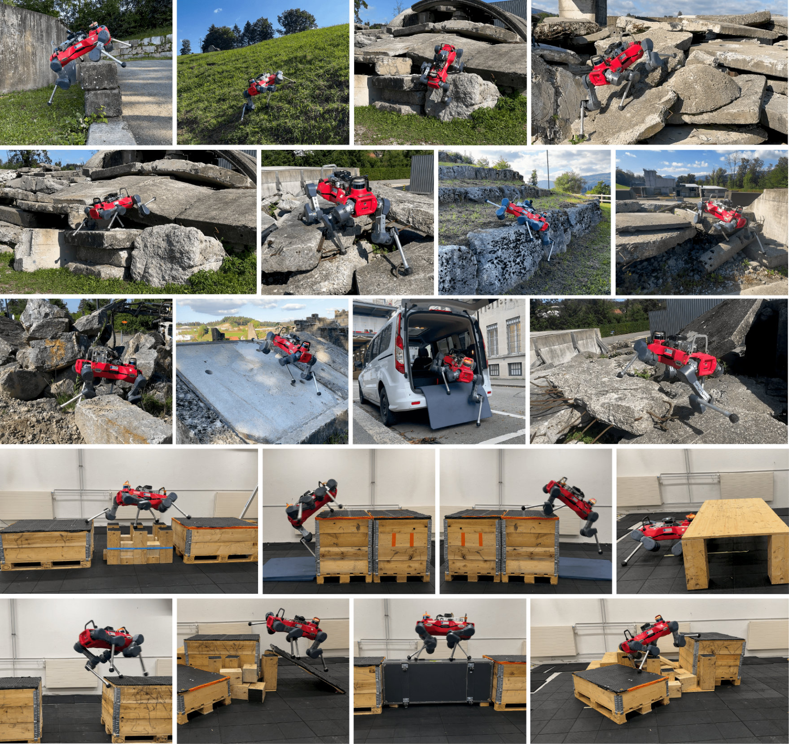
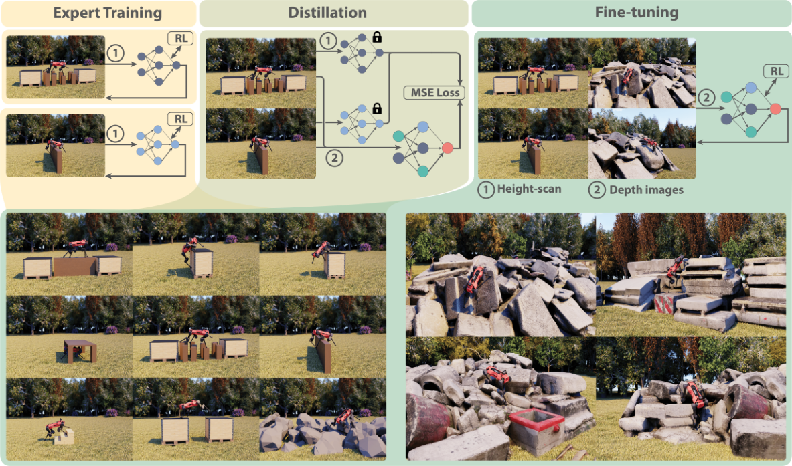
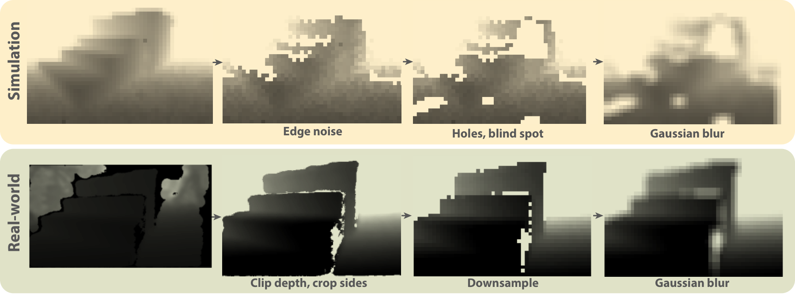
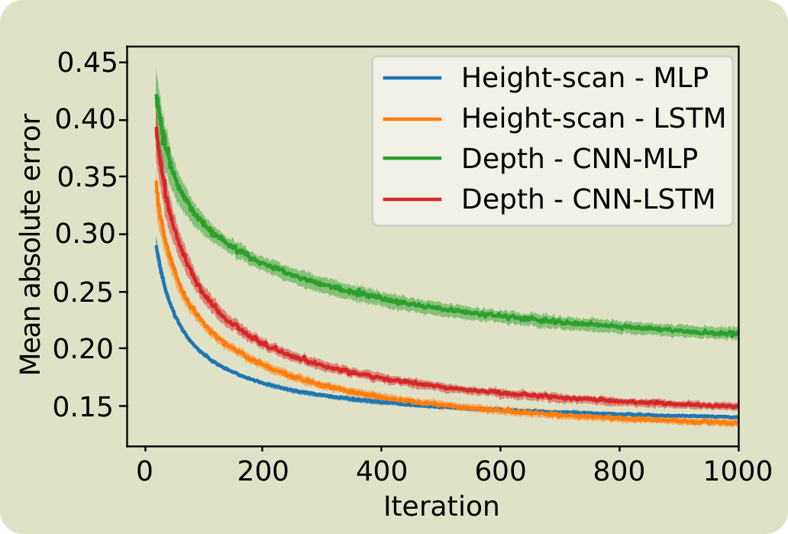
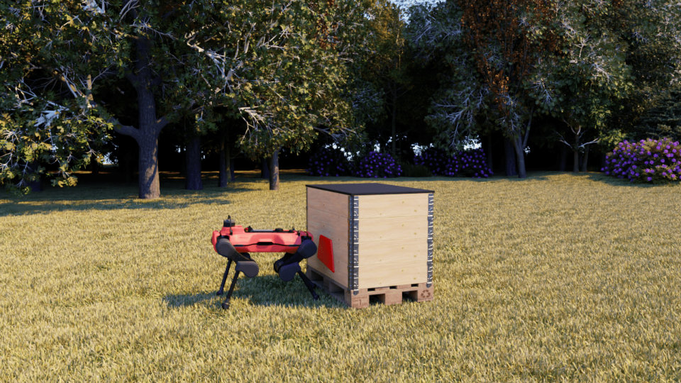
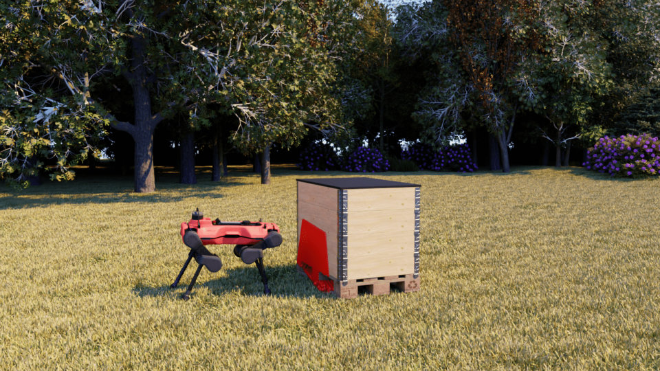
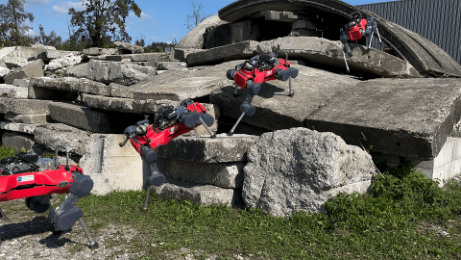

论文信息
- 题目：Parkour in the Wild: Learning a General and Extensible Agile Locomotion Policy Using Multi-expert Distillation and RL Fine-tuning
- 作者：Nikita Rudin、Junzhe He、Joshua Aurand、Marco Hutter
- 机构：ETH Zürich Robotic Systems Lab；第一作者同时隶属 NVIDIA Switzerland
- 预印本：arXiv:2505.11164
- 期刊记录：The International Journal of Robotics Research OnlineFirst，2026 年 6 月 3 日首次在线发表；尚未编入正式卷期
- 实验平台：ANYmal D 四足机器人
- 关键词：多专家策略、策略蒸馏、DAgger、强化学习微调、视觉运动控制、持续扩展、Sim-to-Real
说明：本文以公开的 arXiv 全文为主要技术依据。期刊版本的书目信息已更新，但正文分析对应公开版本；如果两个版本未来出现参数差异，应以最终期刊正文为准。
一句话结论
这篇论文的关键不是发明一种新的 PPO，而是设计了一条能扩展的训练路线：先把困难的多技能探索拆成九个可独立调好的专家，再通过 DAgger 把专家知识压入一个以深度图为输入的统一策略，最后用 RL 直接优化任务成功率，修复蒸馏中的动作冲突、感知差异和分布偏移。
最简流程如下：
九种地形分别训练专家 |

原论文图 1：单一通用策略在真实环境中组合不同运动能力。图片来源：Rudin et al., 2025 公开论文。
1. 论文真正想解决什么问题
四足机器人已经可以针对单一任务学会非常强的动作，例如跳跃、攀爬、钻过低矮空间或踩踏脚石。但“每种障碍一个策略”离真实部署还有很大距离。
真实世界不会提前告诉机器人：
前方 2 米是楼梯，请切换 climb policy； |
实际需要的是同一个控制器根据当前观测自行决定：
- 眼前是什么地形；
- 该调用哪类运动能力；
- 是否需要把多种能力连续组合；
- 遇到训练时没有见过的混合障碍时如何调整动作；
- 未来发现新失败案例时，能否把新能力加入而不忘掉旧能力。
因此，论文的目标不是单纯追求某一个 parkour 动作的极限，而是同时追求四点：
- General：一个策略覆盖多种地形和动作。
- Agile：策略仍保留专家的跳跃、攀爬等动态能力。
- Extensible：遇到新地形后可以继续微调，而不是从头训练。
- Deployable：使用真机可获得的深度图，并能经受感知噪声与现实扰动。
2. 为什么“把所有地形放进 PPO 一起训练”不够
直觉上最简单的办法是把所有地形混在一起，然后从随机初始化开始训练一个大策略。但作者观察到明显的多任务探索失败：
- 不同地形所需动作模式差异很大；
- 训练早期，一些容易任务更快产生正回报；
- 数据和梯度逐渐被这些任务主导；
- 策略收敛到少数运动模式；
- 对其他任务几乎不再探索；
- 即使能过多种地形，也可能只学到一种“到处勉强能用”的折中动作。
可以把它理解为：
因为策略参数共享后，各任务梯度会互相影响；更根本的是，训练数据由当前策略自己采集，一旦某项技能在早期没有被发现，它就很难获得足够的成功轨迹来翻身。
论文采用的工程思想是：先分治，再合并，最后联合优化。
3. 三阶段训练框架总览

原论文图 2（核心方法图）：第一阶段在 9 类地形上分别训练专家，第二阶段用 DAgger 蒸馏到深度图策略，第三阶段加入新地形与真实扫描地形做 RL 微调。图片来源：Rudin et al., 2025。
3.1 第一阶段：九个地形专家
作者分别训练九个专家策略：
| 专家 | 主要能力 | 典型难点 |
|---|---|---|
| Walk | 普通行走 | 基础稳定性与目标跟踪 |
| Climb | 向上攀爬 | 前腿搭接、重心抬升 |
| Climb down | 向下攀爬 | 视觉遮挡、落脚冲击 |
| Jump | 跳跃/越沟 | 起跳时机、腾空与落地 |
| Tables / Crouch | 从桌面等低矮障碍下通过 | 身体高度与碰撞约束 |
| Rock pile | 攀爬石堆 | 不规则接触与连续姿态调整 |
| Low wall | 越过矮墙 | 需要攀爬与跳跃式动作 |
| Beams | 通过窄梁 | 极高的落脚精度 |
| Stepping stones | 踩踏脚石 | 稀疏可落脚区域与步序规划 |
前五类能力来自作者团队之前的 ANYmal Parkour 系统，本文再增加低墙、脚石、窄梁和石堆四类技能。
每个专家可以有自己的：
- 地形课程；
- reward 权重；
- termination 条件；
- 初始化方式；
- 训练技巧。
例如论文提到，低墙专家从攀爬专家的权重开始训练。这样虽然前期调参成本仍高，但每个问题相对单纯，且训练好的专家可以被冻结并反复使用。
3.2 第二阶段：多专家 DAgger 蒸馏
九个专家最终必须合并为一个 student policy。目标可写为：
其中 是当前地形对应的专家。Student 实际上同时在学习两个隐含任务：
- 从自己的深度视觉与本体观测中判断当前地形需要哪类行为；
- 模仿对应专家的动作。
作者使用与 DAgger 相似的在线数据聚合方式：
- 在并行仿真中把机器人分配到九类地形；
- 由 student 的动作 推进环境；
- 在 student 真正到达的状态上查询对应 expert；
- 保存 ；
- 用动作均方误差更新 student；
- 重复采集和训练。
监督损失为：
它和普通行为克隆的关键区别是：数据分布来自 student，而不是只来自 expert。
如果只记录 expert 的成功轨迹，student 一旦产生小误差，就可能进入 expert 数据没有覆盖的状态。此时错误会继续积累。DAgger 让 expert 给 student 自己访问到的状态重新标注动作，因此能缓解 covariate shift。
数据采集时，作者还给 student 动作加入零均值高斯噪声：
这个细节有两个作用：
- 让蒸馏策略覆盖专家轨迹附近更多状态，增强恢复能力；
- 让策略提前适应 RL 阶段用于探索的动作噪声，减少从监督学习切到 RL 时的性能崩塌。
3.3 第三阶段：RL fine-tuning
蒸馏结束后，student 已经有“能完成大部分技能”的行为先验，但它还不是最终答案：
- 多专家在相似状态可能给出不同动作，MSE 会学到不合理的平均动作；
- student 和 expert 使用不同感知输入，student 未必拥有完整判断依据；
- 模仿优化的是“像专家”，不是“任务是否成功”；
- expert 没见过的组合地形无法直接提供标签。
因此作者取消 expert 监督，直接用任务 reward 做 RL 微调。微调地形包括：
- 原九类专家地形；
- 一条由箱子、沟、桌面、楼梯、坡面组成的 parkour line；
- 15 个由搜索救援设施实景扫描得到的新地形模型。
这一阶段的意义是把优化目标从：
切换到：
4. 策略究竟看到了什么
4.1 任务命令
策略不是接受传统的 速度命令，而是位置式任务描述：
- 目标基座位置 ；
- 目标朝向 ；
- 到达目标的剩余时间 。
这使策略同时承担局部导航和敏捷运动：它需要在指定时间内移动到目标位姿，而不是只跟踪瞬时速度。
4.2 本体观测
所有 actor 使用的 proprioception 包括：
- 基座线速度 ；
- 基座角速度 ；
- 基座坐标系中的重力方向 ；
- 12 个关节位置 ；
- 12 个关节速度 ；
- 上一步动作。
这些信息回答的是“机器人自己现在是什么状态”。
4.3 外部感知：expert 与 student 不同
专家看到的是机器人周围的局部 elevation map。它接近仿真里的特权信息：地形高度清楚、不会因机器人俯仰而改变，也不受遮挡影响。
Student 则使用四张机载深度图：
- 两个前向深度相机；
- 两个后向深度相机。
这意味着蒸馏不只是 policy compression，也是 cross-modal distillation：
expert: elevation map + proprioception |
这也是问题变难的主要来源之一。同一障碍可能已经在 elevation map 中完整可见，却只在深度相机里露出局部，甚至暂时离开视野。
4.4 非对称 actor-critic
论文的观测表显示，critic 在微调时拥有比 actor 更丰富的信息：
- actor/student：本体观测 + 四张深度图；
- critic：本体观测 + 细粒度局部 elevation map + 大范围粗粒度 elevation map + 水平 LiDAR-like scan；
- expert：本体观测 + 小范围 elevation map。
这属于 asymmetric actor-critic：部署时 actor 只依赖真实可得传感器，训练时 critic 用特权地形信息更准确地估值，从而降低策略梯度方差。
5. 网络结构
Student/fine-tuned actor 的数据流是：
4 × depth image |
这里有两个容易忽略的设计：
- task command 在 LSTM 后再次进入 MLP，记忆模块主要负责融合视觉历史和机器人状态；
- proprioception 既进入 LSTM，又通过后级拼接直接送给 MLP，当前状态不必完全经过 recurrent bottleneck。
为什么需要 LSTM
深度相机存在遮挡、近距离盲区和有限视场。机器人接近障碍时，先前看见的障碍顶部可能从当前图像消失，但控制仍需使用这段历史信息。
论文比较了：
- elevation map + MLP；
- elevation map + LSTM；
- depth images + MLP；
- depth images + LSTM。
结果表明 elevation map 下两类网络都能较好蒸馏；深度图输入下，LSTM 对得到有效策略非常关键。即便加入 LSTM，深度图的重建误差仍更高，因为某些障碍在动作早期本来就视觉歧义，例如薄墙与箱子在开始攀爬前可能难以区分。
6. RL 微调的奖励函数
论文给出了微调阶段的完整 reward。为方便理解，我把它分成四组。
6.1 完成任务
| 项 | 含义 | 权重 |
|---|---|---|
| Track position | 最后 1 秒内跟踪目标平面位置 | 10 |
| Track heading | 最后 1 秒内跟踪目标朝向 | 5 |
| Don’t wait | 基座速度小于 时惩罚 | -1 |
| Stand at target | 到达目标后偏离默认站姿的惩罚 | -0.5 |
位置与朝向奖励只在 时开启。这说明策略并非每一步都被局部轨迹牵引，而是主要对时限结束时的目标状态负责，因而保留了选择不同动作序列的自由。
“Don’t wait” 则防止策略利用这种稀疏目标结构在前期原地不动。
6.2 平滑与能耗
| 项 | 表达式概念 | 权重 |
|---|---|---|
| Joint velocity | ||
| Torque | ||
| Base acceleration | 线加速度平方 + 0.02 × 角加速度平方 | |
| Feet acceleration | 四足加速度范数之和 | |
| Action rate | 相邻目标关节位置变化平方 |
这些项限制高频抖动、过大动作变化和不必要的动力消耗，但权重必须足够小，否则策略会偏向“安全但不动”。
6.3 硬件与接触安全
| 项 | 触发条件 | 权重 |
|---|---|---|
| Joint velocity limit | 超出关节速度限制的部分 | -1 |
| Torque limit | 超出力矩限制的部分 | -0.2 |
| Feet force | 足端力超过 700 N 的平方惩罚 | |
| Collision | 膝部或小腿碰撞 | -1 |
6.4 失败终止
当机身 z 轴与重力的夹角超过 ，或关节速度超过限制时，给予 的终止惩罚。
这是一项远大于普通 shaping reward 的惩罚，作用是清楚地区分“动作不够漂亮”和“进入危险状态”。
7. 为什么从蒸馏切换到 RL 容易崩
论文指出，直接对蒸馏策略施加 RL loss，性能往往会持续下降。原因可以从三个分布变化理解：
- 动作分布变化：确定性模仿输出变成带方差的随机策略；
- 状态分布变化：探索噪声把机器人推到蒸馏数据较少覆盖的状态；
- 优化目标变化：MSE 的局部几何与 policy gradient 的更新方向完全不同。
作者给出三项关键稳定措施：
- 蒸馏时加入动作噪声，先把 foundation policy 训练得足够鲁棒；
- RL 开始时使用较小的策略分布标准差，并保守设置超参数；
- 先冻结 actor，只训练 critic；critic 足够准确后再更新 actor。
第三点尤其重要。如果刚开始的 value estimate 很差，advantage 的符号和尺度都可能不可靠，一个原本可用的 actor 会被错误梯度迅速破坏。
可以把训练切换写成：
阶段 A：冻结 actor，rollout 当前蒸馏策略，预训练 critic |
8. 深度图 Sim-to-Real
8.1 为什么不能直接使用仿真真值深度
ANYmal D 的 RealSense D435i 通过双目匹配与红外投影估计深度。真实图像会出现：
- 物体边缘缺失；
- 某些表面无法匹配；
- 近场无效；
- 左右视差造成局部盲区；
- 距离越远，精度越差；
- 反光、阳光等因素导致退化。
理想渲染深度没有这些问题。如果在理想图像上训练，policy 很容易依赖现实中不存在的细节。
这些故障不是普通的“每个像素加一点白噪声”，而是明显的结构化错误：
| 真实深度图问题 | 对控制的影响 | 论文的处理 |
|---|---|---|
| 物体边缘双目匹配失败 | 箱体、矮墙和台阶边界断裂或漂移 | 随机删除、打乱边缘附近像素 |
| 弱纹理、反光或红外条件不良 | 大块区域没有有效深度 | 用 Perlin noise 生成成片空洞 |
| 物体太近 | 攀爬时最重要的近场几何反而消失 | 小于 0.15 m 的像素设为空值 |
| 双目基线导致画面侧边盲区 | 障碍靠近画面边缘时轮廓不完整 | 随机移除最左侧 1～5 列 |
| 距离增大时精度下降 | 远处小结构不可靠 | 限制量程并用高斯模糊主动去掉细节 |
8.2 仿真图像退化流程

原论文图 4（深度图噪声模型）：上排把理想仿真深度依次加入边缘错误、空洞/盲区和高斯模糊；下排则对真实图像做裁剪、降采样和相同的模糊。图片来源：Rudin et al., 2025/2026。
论文先渲染 的低分辨率深度图，然后做以下处理：
- Clip：最大深度截到 2 m；小于 0.15 m 的像素也设为 2 m，模拟近场无效；
- Edge noise：通过深度梯度找边缘，将边缘附近像素随机清空或与邻居打乱；
- Holes：用缓慢变化的 Perlin noise 生成缺失区域，使空洞具有时间连续性；
- Blind spot：随机去掉最左侧 1～5 列，模拟近距离双目盲区；
- Gaussian blur：模糊全图，去掉过于理想的小细节。
其中“空”不是 0，而是设成最大深度 2 m。Perlin noise 也不是每帧独立重采样，而是缓慢演化；因此空洞会在连续帧中持续一段时间，更像真实传感器，也防止 LSTM 只靠相邻帧的偶然闪烁轻易补齐缺失值。
真实图像不再人为添加边缘噪声和空洞，因为 D435i 已经自带这些缺陷；它们只执行同样的深度截断、裁剪、降采样和高斯模糊。这使真实与仿真在共同的“低质量域”中更接近。
这里的策略不是让模拟器精确复现 D435i 的全部成像物理，而是主动丢弃无法稳定迁移的信息。
8.3 为什么深度图需要记忆

原论文图 7：Elevation map 用 MLP 和 LSTM 都能得到较低误差；换成带空洞、遮挡与有限视场的深度图后，没有记忆的 CNN–MLP 误差明显更高，CNN–LSTM 才能有效整合时序信息。图片来源：Rudin et al., 2025/2026。
记忆在这里同时解决三个问题：
- 补空洞：当前帧缺失的边缘，可能在之前帧中出现过；
- 处理遮挡：障碍靠近机身后离开相机视场，策略仍需记住它的几何形状；
- 解除单帧歧义：薄墙和箱子在尚未接近或攀爬时可能看起来相同，需要结合自身运动后的观测变化才能区分。
不过，图 7 也表明 CNN–LSTM 使用深度图时的误差仍高于 elevation map。这说明时序记忆只是缓解信息缺失，并不能凭空恢复从未被任何相机观测到的几何。这也与后文的 active perception 行为直接呼应：当记忆不够时，策略会主动改变机身姿态和观测距离，让障碍重新进入视场。
9. 实验结果怎么读
所有表格成功率来自仿真中 1000 次 rollout，地形在最大训练难度的 90% 附近随机化。
9.1 蒸馏保留了技能，但仍有明显损失
| 地形 | 对应专家 | 仅蒸馏 | RL 微调后 |
|---|---|---|---|
| Walk | 94.6 | 99.3 | 100.0 |
| Climb | 98.8 | 98.1 | 99.5 |
| Climb down | 99.9 | 84.3 | 99.7 |
| Jump | 98.4 | 93.5 | 98.0 |
| Tables | 99.4 | 78.9 | 100.0 |
| Rock pile | 92.2 | 82.6 | 96.5 |
| Low wall | 84.8 | 77.0 | 99.9 |
| Beams | 97.3 | 85.2 | 99.5 |
| Stepping stones | 98.8 | 73.0 | 98.8 |
蒸馏后相对对应专家平均下降 10.4%。下降最明显的地方有两类：
- 技能歧义：Tables 与 Climb、Climb down 与 Jump 的类似状态可能对应不同专家动作；
- 精确感知：窄梁和脚石要求精确落脚，而 student 从 elevation map 换成了有噪声深度图。
一个有趣的反例是 Walk：蒸馏策略达到 99.3%，反而超过 Walk 专家 94.6%。这说明共享参数不只有负迁移；从复杂技能获得的恢复与跨越动作也可能增强简单行走。
9.2 RL 微调真正带来了泛化
| 新/未见地形 | 仅蒸馏 | RL 微调后 |
|---|---|---|
| Parkour line（微调见过） | 5.8 | 98.5 |
| Scanned meshes train | 11.9 | 99.1 |
| Scanned meshes test（未见） | 14.9 | 94.9 |
| Arranged rocks（未见） | 62.9 | 93.2 |
| Gap-climb（未见技能组合） | 10.2 | 82.0 |
| Climb down on stones（未见技能组合） | 11.3 | 54.4 |
微调策略在九类专家地形上平均比对应专家高 3.1%，并在未见过的扫描模型上达到 94.9%。
但“Climb down on stones” 只有 54.4%，这是论文很诚实的一项结果：会下台阶、也会踩石头，不代表一定会把两者组合好。组合泛化不是把技能名称相加，而是需要在新的接触序列里重新协调全身动作。
9.3 持续微调能否加入新能力
作者专门把 “Climb down on stones” 作为新任务再训练：
- 从随机初始化训练：找不到可用解；
- 从 distilled policy 开始：能获得非平凡性能；
- 从已 RL fine-tuned policy 开始：学习更快、最终更好；
- 新旧所有地形混合训练：新地形最终成功率最高。
Repeated fine-tuning 后该地形从 54.4% 提升到 92.4%，同时旧地形性能基本没有显著变化。
最值得注意的是：新地形只占采样的 3%，混合旧地形反而比只训练新地形更好。可能的解释是：
- 旧地形维持了运动先验，降低灾难性遗忘；
- 多样数据起到了正则化作用；
- 新任务需要复用旧技能，而不是完全重写 policy；
- 只在一个难地形上更新容易过拟合局部动作与地形几何。
作者也明确说，这只证明几十种地形范围内可行，不足以证明无限扩展不会遇到容量与技能干扰瓶颈。
10. 为什么 distillation + fine-tuning 优于其他组合方式
论文比较了三类方案。
10.1 Hierarchical skill selector
高层策略每步选择一个专家并修改其命令。
优点：
- 专家本身保持冻结；
- 技能边界清楚；
- 理论上易解释。
缺点：
- 硬切换难以连续融合动作；
- 技能从五个增加到九个后，高层策略会完全放弃部分技能；
- Gap-climb 需要同时融合 jump 与 climb，而不是二选一。
10.2 VAE latent skill space
先把专家动作编码到共享 latent space，冻结 decoder，再训练策略输出 latent。
优点：
- latent action space 比原始关节动作更容易探索；
- 从随机初始化训练时优于标准 end-to-end RL；
- 对两个已知技能之间的插值有帮助。
缺点：
- decoder 的动作流形由旧专家数据决定；
- 新地形需要的全新动作可能不在这个流形中；
- 训练步骤和组件更多；
- 技能、地形规模继续增加后效率下降。
10.3 Distillation + RL fine-tuning
蒸馏提供一个覆盖多个成功模式的参数初始化，RL 又没有冻结 decoder 或专家边界，因此可以修改和创造动作。
它的核心优势可以概括为：
比从零 RL 更容易探索 |
11. 一个很重要的涌现行为：Active Perception
| 仅蒸馏策略 | RL 微调后策略 |
|---|---|
 |
 |
原论文图 8：仅蒸馏策略复制 expert 的贴近动作；RL 微调后，策略为了让箱顶留在深度相机视场内，会主动离障碍更远。图片来源：Rudin et al., 2025。
攀爬专家使用理想 elevation map，因此它可以贴近箱子后再抬腿。但 student 的相机固定在机身上：离箱子太近时，箱顶会离开视场。
蒸馏阶段要求 student 模仿 expert，所以 student 也倾向于贴近障碍，靠 LSTM 记住之前看见的箱顶。这种动作在无扰动时可行，但可靠性较低。
RL 微调后，策略出现了新的动作：
- 在离箱子更远的位置停下；
- 调整机身俯仰；
- 让箱顶重新进入深度相机视场；
- 看清后再触碰和攀爬。
这是 active perception：策略不仅“根据图像运动”，还主动改变身体姿态来改善下一时刻的图像。
这个例子也解释了为什么最后必须有 RL：expert 的动作对 expert 的传感器最优，却不一定对 student 的传感器最优。纯模仿无法主动背离老师，而任务 reward 可以。
12. 真机部署

原论文图 9（局部）：微调后的策略在训练时未见的真实搜救场地中部署。图片来源：Rudin et al., 2025。
部署使用标准 ANYmal D：
- 使用六个深度相机中的四个；
- 不使用机载 LiDAR；
- 不使用外部传感器；
- 全部推理在机载 CPU 上完成；
- policy 控制频率 50 Hz；
- 深度输入更新频率 15 Hz；
- 相机内部以 60 Hz 发布 ROS message；
- 每次直接使用各相机最近一帧，不做显式同步。
训练时随机化每个相机的延迟，因此部署时可以容忍不同相机时间戳不完全一致。
论文报告的真机能力包括：
- 室内孤立障碍与混合障碍；
- 搜索救援设施中的碎石和模拟坍塌建筑；
- 跳跃、攀爬等动态动作；
- 湿滑或移动地面；
- 脚卡进裂缝或钢丝；
- 高草视觉干扰；
- 反光表面与阳光造成的深度退化。
需要注意：论文主要给出真机定性展示，完整的数值成功率表来自仿真，不能把仿真 94.9% 直接解释成现实场景成功率。
13. 论文的局限性
13.1 多专家蒸馏本质上是病态监督问题
不同专家可能在相似观测下输出不同动作。MSE 会倾向平均这些动作，但动作平均不等于行为平均：
可能既不能跳，也不能爬。论文靠 RL 后处理缓解冲突，但并未从根本上解决多模态监督目标。
未来可考虑：
- mixture density policy；
- 显式 skill token 或可学习路由；
- advantage-weighted distillation；
- 按 teacher confidence 加权；
- diffusion / autoregressive action modeling。
13.2 仍需要大量人工设计
九个专家分别需要 curriculum、reward 和初始化调试；微调阶段还要重新统一不同专家的 reward 与 termination。论文的训练路线降低了全任务联合调参难度，但没有消除调参。
13.3 视觉精度仍不足
在窄梁和脚石上，策略会先踩错再恢复；遇到桌面悬空结构时，有时需要先碰到障碍才开始下蹲。强恢复能力掩盖了感知和落脚规划不够准确的问题。
13.4 “安全通过”可能以硬件磨损为代价
微调策略在攀爬和跳跃时比专家更常使用膝部接触。这能提高成功率，却带来电机冲击和机械磨损。训练 reward 中虽然有膝/小腿碰撞惩罚，但真实行为表明这项约束还不够。
13.5 LSTM 的长期记忆会稀释
机器人看见箱子后，如果马上前进，它会正确攀爬；若原地等待几秒再前进，它可能撞上箱子。因为 LSTM hidden state 每步更新，即使没有新信息，旧障碍信息也会逐渐消失。
作者建议未来考虑 attention/Transformer，使策略能选择性保留关键历史观测。
13.6 端到端策略难诊断
一旦出现失足，很难判断是：
- 深度噪声导致障碍没看清；
- CNN 特征提取失败；
- LSTM 忘记历史；
- locomotion 本身落脚错误；
- reward 鼓励了高风险恢复行为。
模块化系统接口会损失信息，但端到端系统也牺牲可解释性和独立调试能力。
14. 我认为这篇论文最有价值的三点
14.1 Distillation 不是终点，而是 RL 的探索先验
很多工作把蒸馏成功定义为“student 尽可能复制 teacher”。本文更实用的观点是：即使 student 比 expert 差，只要它已经进入多个技能的可行解附近，就能作为后续 RL 的 foundation policy。
因此评价蒸馏模型时，除了 imitation accuracy，还应问：
- 它是否覆盖所有行为模式？
- 加探索噪声后是否仍能恢复？
- 从它开始做 RL 是否比从零更快？
- 它是否为新任务提供有用的 state visitation distribution？
14.2 感知与控制必须共同优化
专家的最优动作依赖其感知接口。更换传感器后，动作也应改变。Active perception 说明 end-to-end RL 的价值不只是少写一个建图模块，而是让运动本身适应感知限制。
14.3 持续学习未必只靠复杂的 anti-forgetting 算法
本文没有使用 EWC、replay buffer 专用损失或参数隔离，而是让新地形只占小部分样本，同时持续混入全部旧地形。至少在当前规模上，这种简单 rehearsal 就能维持旧技能并提升新技能。
15. 如果我要复现，建议怎么拆
这篇工作完整复现的门槛很高，不建议第一步就实现九专家 + 四相机 + 真机。可以按以下层级推进。
Level 1：两专家动作蒸馏
先选择两个差异明确的任务，例如：
- flat walk；
- stair climb。
保持 expert 和 student 都使用 height scan，先验证：
- student rollout + expert relabel；
- DAgger dataset 聚合；
- 动作 MSE；
- 每个 terrain 分开统计成功率；
- 加噪声与不加噪声的恢复能力。
Level 2：验证感知跨模态
将 student 输入改为 depth image，expert 仍用 height scan：
teacher: privileged height scan |
分别测试 MLP 和 LSTM，制造相机遮挡，确认记忆是否真正有用。
Level 3：蒸馏后 RL 微调
先只在原有两类地形上微调，重点验证稳定切换：
- distillation checkpoint 的确定性成功率；
- 加不同动作噪声后的成功率；
- actor 冻结期间 critic loss 与 explained variance；
- 解冻 actor 后各任务成功率是否瞬间下降；
- 标准差、learning rate、clip range 对遗忘的影响。
Level 4：加入组合地形
构造必须连续使用两个技能的新障碍，例如：
平地 → 缺口 → 高台 → 下台阶 |
比较：
- 从零 RL；
- 仅蒸馏；
- 蒸馏 + RL；
- 已微调策略再次 fine-tune。
Level 5：视觉 Sim-to-Real
最后再加入：
- 深度图；
- near/far clipping；
- edge dropout；
- temporal Perlin holes；
- blind columns；
- blur；
- camera latency randomization；
- 非同步多相机输入。
16. 复现时建议记录的指标
只看总 reward 不足以解释多技能训练。至少应按地形分别记录：
- success rate；
- episode termination reason；
- target position/heading error；
- 每米能耗或 torque integral；
- joint velocity/torque limit violation；
- knee/shank collision count；
- peak foot contact force；
- action rate；
- teacher-student action MSE；
- critic explained variance；
- policy entropy / action standard deviation；
- 每类地形的采样比例与梯度贡献；
- 新任务训练前后旧任务性能变化。
尤其要画一个 task × checkpoint 矩阵，否则平均成功率可能掩盖某个技能已经被完全遗忘。
17. 读论文时容易产生的误解
误解 1：一个策略成功，是因为网络足够大
论文真正强调的是训练分布和初始化。没有专家蒸馏时，标准 RL 会卡在部分任务；网络结构本身不能自动解决多模态探索。
误解 2：DAgger 后已经得到通用策略
仅蒸馏策略在 Parkour line 上只有 5.8%，在未见扫描地形上只有 14.9%。它主要提供技能覆盖和初始化，真正的新地形能力来自 RL 微调。
误解 3：RL 微调只是小幅抛光
Parkour line 从 5.8% 到 98.5%，训练扫描地形从 11.9% 到 99.1%。这不是简单去噪，而是显著重构行为。
误解 4：泛化意味着任意技能组合都能完成
初次面对 Climb down on stones 时只有 54.4%。论文证明了较强但有限的组合泛化，并没有证明系统已经拥有抽象符号式技能组合能力。
误解 5：真机不需要状态估计
论文说深度图输入降低了对精确地形建图与状态估计的依赖，不代表控制系统完全没有机器人状态估计。本体速度、重力方向等观测仍需估计。
18. 与我已有四足 RL 知识的连接
这篇论文可以放进下面这条知识链：
MDP / observation / action |
它也把之前容易分开理解的几个概念串了起来：
- expert 的 elevation map 是 privileged information；
- student 的 LSTM hidden state 是 terrain/history latent；
- DAgger 解决 student rollout 的分布偏移；
- asymmetric critic 提升视觉 actor 的 RL 训练效率；
- action noise 同时连接蒸馏鲁棒性与 RL exploration；
- old-terrain rehearsal 缓解 repeated fine-tuning 的遗忘；
- active perception 是 perception-action closed loop 的涌现结果。
19. 最终评价
这篇论文最强的地方，是它没有把“通用运动策略”包装成一次训练即可得到的魔法模型，而是正面承认：
- 专家训练费力；
- 多专家动作存在冲突；
- 蒸馏会损失性能；
- 视觉跨模态让模仿更难；
- RL 从零探索会模式坍塌；
- 监督学习切到 RL 会不稳定；
- 未见技能组合仍会失败；
- 真机高成功率动作不一定对硬件友好。
它给出的答案也非常工程化：
用专家解决“先找到成功动作”的问题； |
因此，我认为本文最值得复用的不是某一个 reward 数值，而是这套分阶段思维：
先让策略拥有多种可行行为，再让任务目标决定这些行为应该如何融合、修改和扩展。
参考资料
- Rudin, N., He, J., Aurand, J., & Hutter, M. Parkour in the Wild: Learning a General and Extensible Agile Locomotion Policy Using Multi-expert Distillation and RL Fine-tuning. arXiv:2505.11164, 2025.
- Rudin, N., et al. 期刊版本 DOI 页面. The International Journal of Robotics Research, OnlineFirst, 2026.
- Ross, S., Gordon, G. J., & Bagnell, J. A. A Reduction of Imitation Learning and Structured Prediction to No-Regret Online Learning. AISTATS, 2011.
- Hoeller, D., Rudin, N., Sako, D., & Hutter, M. ANYmal Parkour: Learning Agile Navigation for Quadrupedal Robots. 2023.
- Rudin, N., Hoeller, D., Reist, P., & Hutter, M. Learning to Walk in Minutes Using Massively Parallel Deep Reinforcement Learning. CoRL, 2022.